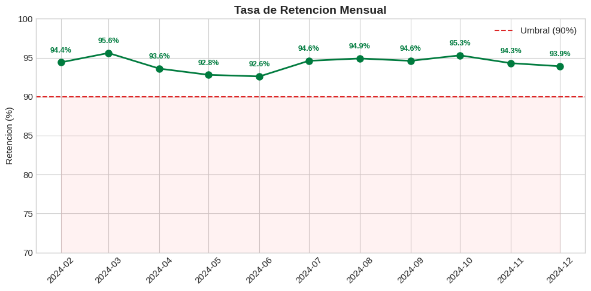
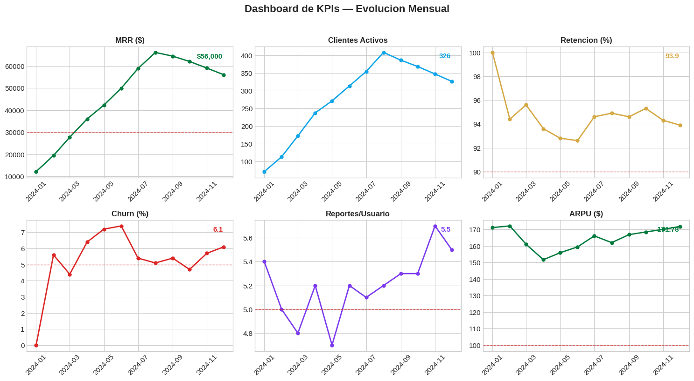
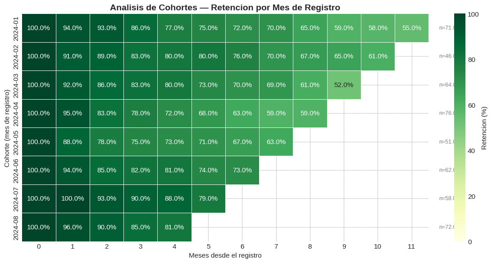
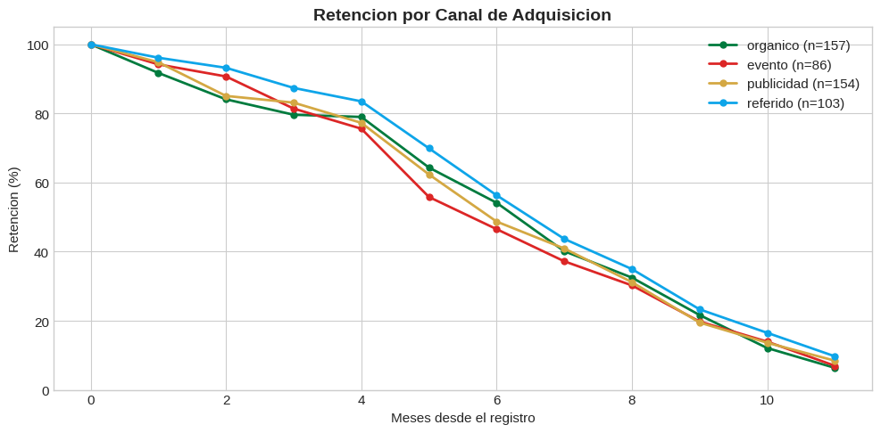

2.3 — KPIs y Metricas de Producto#
Unidad 2: Caracteristicas de Productos de Datos#
Un grafico de ventas por mes es visualizacion. Definir que la metrica que importa es la tasa de retencion a 30 dias, que si baja del 60% hay que actuar, y que el responsable es el equipo comercial — eso es un KPI.
Este notebook cubre como definir metricas que generan accion, como distinguirlas de las que solo se ven bien, y como implementar un sistema de seguimiento con Python.
Contenido:#
Metricas accionables vs vanidosas
Definir KPIs con el framework SMART
Implementar KPIs con pandas
Analisis de cohortes
Dashboard de seguimiento
import pandas as pd
import numpy as np
import matplotlib.pyplot as plt
import matplotlib.ticker as mticker
import seaborn as sns
plt.style.use('seaborn-v0_8-whitegrid')
plt.rcParams['figure.figsize'] = (10, 5)
plt.rcParams['font.size'] = 11
# ============================================================
# DATASET DE EJEMPLO — plataforma SaaS de productos de datos
# ============================================================
# Simulamos 12 meses de datos de una plataforma que vende
# dashboards y reportes como servicio (suscripcion mensual)
np.random.seed(42)
n_clientes = 500
meses = pd.date_range('2024-01-01', periods=12, freq='MS')
# Generar clientes con fecha de registro
clientes = pd.DataFrame({
'cliente_id': range(1, n_clientes + 1),
'fecha_registro': np.random.choice(meses[:8], n_clientes),
'plan': np.random.choice(['basico', 'profesional', 'enterprise'], n_clientes, p=[0.5, 0.35, 0.15]),
'canal_adquisicion': np.random.choice(['organico', 'referido', 'publicidad', 'evento'], n_clientes, p=[0.3, 0.25, 0.3, 0.15]),
})
precios = {'basico': 50, 'profesional': 150, 'enterprise': 500}
clientes['precio_mensual'] = clientes['plan'].map(precios)
# Generar transacciones mensuales (algunos clientes cancelan)
registros = []
for _, cliente in clientes.iterrows():
meses_activo = meses[meses >= cliente['fecha_registro']]
prob_cancelar = {'basico': 0.08, 'profesional': 0.04, 'enterprise': 0.02}
activo = True
for mes in meses_activo:
if not activo:
break
registros.append({
'cliente_id': cliente['cliente_id'],
'mes': mes,
'plan': cliente['plan'],
'ingreso': cliente['precio_mensual'],
'tickets_soporte': np.random.poisson(1.5 if cliente['plan'] == 'basico' else 0.5),
'logins': np.random.poisson(12 if cliente['plan'] != 'basico' else 5),
'reportes_generados': np.random.poisson(8 if cliente['plan'] != 'basico' else 2),
})
if np.random.random() < prob_cancelar[cliente['plan']]:
activo = False
df = pd.DataFrame(registros)
df['mes'] = pd.to_datetime(df['mes'])
df = df.merge(clientes[['cliente_id', 'fecha_registro', 'canal_adquisicion']], on='cliente_id')
print(f"Clientes: {n_clientes}")
print(f"Transacciones: {len(df)}")
print(f"Periodo: {df['mes'].min().strftime('%Y-%m')} a {df['mes'].max().strftime('%Y-%m')}")
df.head()
Clientes: 500
Transacciones: 3366
Periodo: 2024-01 a 2024-12
| cliente_id | mes | plan | ingreso | tickets_soporte | logins | reportes_generados | fecha_registro | canal_adquisicion | |
|---|---|---|---|---|---|---|---|---|---|
| 0 | 1 | 2024-07-01 | basico | 50 | 2 | 4 | 0 | 2024-07-01 | organico |
| 1 | 1 | 2024-08-01 | basico | 50 | 1 | 2 | 0 | 2024-07-01 | organico |
| 2 | 1 | 2024-09-01 | basico | 50 | 2 | 5 | 2 | 2024-07-01 | organico |
| 3 | 1 | 2024-10-01 | basico | 50 | 3 | 3 | 0 | 2024-07-01 | organico |
| 4 | 2 | 2024-04-01 | basico | 50 | 1 | 5 | 2 | 2024-04-01 | evento |
1. Metricas accionables vs vanidosas#
Una metrica vanidosa se ve bien en una presentacion pero no dice que hacer. Una metrica accionable cambia una decision.
# ============================================================
# METRICA VANIDOSA: "Tenemos 500 usuarios registrados"
# ============================================================
# Esto se ve bien pero no dice nada util
# Cuantos estan activos? Cuantos pagan? Cuantos usan el producto?
total_registrados = clientes['cliente_id'].nunique()
print(f"Usuarios registrados: {total_registrados}")
print("\nEsto es una metrica vanidosa. Solo crece. No dice si el producto funciona.")
Usuarios registrados: 500
Esto es una metrica vanidosa. Solo crece. No dice si el producto funciona.
# ============================================================
# METRICA ACCIONABLE: "Tasa de retencion del 78% este mes"
# ============================================================
# La retencion dice cuantos clientes del mes pasado siguen este mes
# Si baja, hay que investigar por que se van
# Si sube, lo que estamos haciendo funciona
def calcular_retencion_mensual(df):
"""Calcula el porcentaje de clientes que se mantienen mes a mes."""
meses = sorted(df['mes'].unique())
retencion = []
for i in range(1, len(meses)):
mes_anterior = meses[i - 1]
mes_actual = meses[i]
# Clientes activos en el mes anterior
clientes_anterior = set(df[df['mes'] == mes_anterior]['cliente_id'])
# Clientes activos en el mes actual
clientes_actual = set(df[df['mes'] == mes_actual]['cliente_id'])
# Retenidos = los que estaban antes y siguen ahora
retenidos = clientes_anterior & clientes_actual
tasa = len(retenidos) / len(clientes_anterior) * 100 if clientes_anterior else 0
retencion.append({
'mes': mes_actual,
'clientes_anterior': len(clientes_anterior),
'retenidos': len(retenidos),
'perdidos': len(clientes_anterior) - len(retenidos),
'tasa_retencion': round(tasa, 1),
})
return pd.DataFrame(retencion)
df_retencion = calcular_retencion_mensual(df)
print("Retencion mensual:")
df_retencion
Retencion mensual:
| mes | clientes_anterior | retenidos | perdidos | tasa_retencion | |
|---|---|---|---|---|---|
| 0 | 2024-02-01 | 71 | 67 | 4 | 94.4 |
| 1 | 2024-03-01 | 113 | 108 | 5 | 95.6 |
| 2 | 2024-04-01 | 172 | 161 | 11 | 93.6 |
| 3 | 2024-05-01 | 237 | 220 | 17 | 92.8 |
| 4 | 2024-06-01 | 271 | 251 | 20 | 92.6 |
| 5 | 2024-07-01 | 313 | 296 | 17 | 94.6 |
| 6 | 2024-08-01 | 354 | 336 | 18 | 94.9 |
| 7 | 2024-09-01 | 408 | 386 | 22 | 94.6 |
| 8 | 2024-10-01 | 386 | 368 | 18 | 95.3 |
| 9 | 2024-11-01 | 368 | 347 | 21 | 94.3 |
| 10 | 2024-12-01 | 347 | 326 | 21 | 93.9 |
# ============================================================
# VISUALIZAR RETENCION — con linea de umbral
# ============================================================
fig, ax = plt.subplots(figsize=(10, 5))
ax.plot(df_retencion['mes'], df_retencion['tasa_retencion'],
marker='o', linewidth=2, color='#007B3E', markersize=8)
# Linea de umbral — por debajo de esto hay que actuar
ax.axhline(y=90, color='#DC2626', linestyle='--', linewidth=1.5, label='Umbral (90%)')
# Sombrear zona de peligro
ax.fill_between(df_retencion['mes'], 0, 90, alpha=0.05, color='red')
ax.set_title('Tasa de Retencion Mensual', fontsize=14, fontweight='bold')
ax.set_ylabel('Retencion (%)')
ax.set_ylim(70, 100)
ax.legend()
# Anotar el valor de cada punto
for _, row in df_retencion.iterrows():
color = '#DC2626' if row['tasa_retencion'] < 90 else '#007B3E'
ax.annotate(f"{row['tasa_retencion']}%",
xy=(row['mes'], row['tasa_retencion']),
textcoords='offset points', xytext=(0, 12),
ha='center', fontsize=9, color=color, fontweight='bold')
plt.xticks(rotation=45)
plt.tight_layout()
plt.show()
print("\nEsto es una metrica accionable:")
print("Si la linea baja del 90%, sabemos que algo esta mal y hay que investigar.")

Esto es una metrica accionable:
Si la linea baja del 90%, sabemos que algo esta mal y hay que investigar.
Comparativa#
Metrica vanidosa |
Metrica accionable |
|---|---|
Total de usuarios registrados |
Tasa de retencion mensual |
Paginas vistas |
Tiempo promedio en el dashboard |
Descargas de la app |
Usuarios activos diarios (DAU) |
Ingresos acumulados |
MRR (ingreso recurrente mensual) |
Reportes creados (total) |
Reportes por usuario activo |
La diferencia: la vanidosa solo sube, la accionable puede bajar, y cuando baja te dice que hay un problema.
2. Framework SMART para KPIs#
Un KPI bien definido cumple estos criterios:
Specifico: mide exactamente una cosa
Medible: se puede calcular con datos reales
Alcanzable: el objetivo es realista
Relevante: importa para el negocio
Temporal: tiene un plazo definido
# ============================================================
# DEFINIR KPIs PARA NUESTRO PRODUCTO DE DATOS
# ============================================================
kpis = pd.DataFrame([
{
'kpi': 'MRR (Monthly Recurring Revenue)',
'formula': 'Suma de ingresos de todos los clientes activos en el mes',
'umbral': '> $30,000',
'frecuencia': 'Mensual',
'responsable': 'Equipo comercial',
'accion_si_falla': 'Revisar churn y adquisicion',
},
{
'kpi': 'Tasa de retencion',
'formula': 'Clientes que siguen activos / clientes del mes anterior * 100',
'umbral': '> 90%',
'frecuencia': 'Mensual',
'responsable': 'Customer Success',
'accion_si_falla': 'Encuesta de salida, mejorar onboarding',
},
{
'kpi': 'Tasa de churn',
'formula': 'Clientes que cancelaron / clientes activos inicio mes * 100',
'umbral': '< 5%',
'frecuencia': 'Mensual',
'responsable': 'Customer Success',
'accion_si_falla': 'Analizar por plan y canal, contactar clientes en riesgo',
},
{
'kpi': 'Engagement (reportes/usuario)',
'formula': 'Promedio de reportes generados por usuario activo',
'umbral': '> 5 reportes/mes',
'frecuencia': 'Mensual',
'responsable': 'Producto',
'accion_si_falla': 'Revisar UX, agregar plantillas, tutoriales',
},
{
'kpi': 'ARPU (Average Revenue Per User)',
'formula': 'MRR / Usuarios activos',
'umbral': '> $100',
'frecuencia': 'Mensual',
'responsable': 'Pricing',
'accion_si_falla': 'Revisar mix de planes, upselling',
},
])
kpis
| kpi | formula | umbral | frecuencia | responsable | accion_si_falla | |
|---|---|---|---|---|---|---|
| 0 | MRR (Monthly Recurring Revenue) | Suma de ingresos de todos los clientes activos... | > $30,000 | Mensual | Equipo comercial | Revisar churn y adquisicion |
| 1 | Tasa de retencion | Clientes que siguen activos / clientes del mes... | > 90% | Mensual | Customer Success | Encuesta de salida, mejorar onboarding |
| 2 | Tasa de churn | Clientes que cancelaron / clientes activos ini... | < 5% | Mensual | Customer Success | Analizar por plan y canal, contactar clientes ... |
| 3 | Engagement (reportes/usuario) | Promedio de reportes generados por usuario activo | > 5 reportes/mes | Mensual | Producto | Revisar UX, agregar plantillas, tutoriales |
| 4 | ARPU (Average Revenue Per User) | MRR / Usuarios activos | > $100 | Mensual | Pricing | Revisar mix de planes, upselling |
3. Implementar KPIs con pandas#
# ============================================================
# CALCULAR TODOS LOS KPIs MES A MES
# ============================================================
def calcular_kpis_mensuales(df):
"""Calcula los KPIs principales para cada mes."""
meses = sorted(df['mes'].unique())
resultados = []
for i, mes in enumerate(meses):
datos_mes = df[df['mes'] == mes]
# Clientes activos este mes
activos = datos_mes['cliente_id'].nunique()
# MRR
mrr = datos_mes['ingreso'].sum()
# ARPU
arpu = mrr / activos if activos > 0 else 0
# Engagement
reportes_promedio = datos_mes['reportes_generados'].mean()
logins_promedio = datos_mes['logins'].mean()
# Tickets de soporte por usuario
tickets_promedio = datos_mes['tickets_soporte'].mean()
# Nuevos clientes este mes
if i == 0:
nuevos = activos
retencion = 100.0
churn = 0.0
else:
mes_anterior = meses[i - 1]
clientes_anterior = set(df[df['mes'] == mes_anterior]['cliente_id'])
clientes_actual = set(datos_mes['cliente_id'])
nuevos = len(clientes_actual - clientes_anterior)
retenidos = len(clientes_anterior & clientes_actual)
perdidos = len(clientes_anterior) - retenidos
retencion = retenidos / len(clientes_anterior) * 100 if clientes_anterior else 0
churn = perdidos / len(clientes_anterior) * 100 if clientes_anterior else 0
# Mix de planes
mix = datos_mes.groupby('plan')['cliente_id'].nunique()
resultados.append({
'mes': mes,
'clientes_activos': activos,
'nuevos': nuevos,
'mrr': mrr,
'arpu': round(arpu, 2),
'retencion': round(retencion, 1),
'churn': round(churn, 1),
'reportes_por_usuario': round(reportes_promedio, 1),
'logins_por_usuario': round(logins_promedio, 1),
'tickets_por_usuario': round(tickets_promedio, 2),
'pct_enterprise': round(mix.get('enterprise', 0) / activos * 100, 1),
})
return pd.DataFrame(resultados)
df_kpis = calcular_kpis_mensuales(df)
df_kpis
| mes | clientes_activos | nuevos | mrr | arpu | retencion | churn | reportes_por_usuario | logins_por_usuario | tickets_por_usuario | pct_enterprise | |
|---|---|---|---|---|---|---|---|---|---|---|---|
| 0 | 2024-01-01 | 71 | 71 | 12150 | 171.13 | 100.0 | 0.0 | 5.4 | 9.0 | 0.87 | 19.7 |
| 1 | 2024-02-01 | 113 | 46 | 19450 | 172.12 | 94.4 | 5.6 | 5.0 | 9.3 | 0.98 | 19.5 |
| 2 | 2024-03-01 | 172 | 64 | 27700 | 161.05 | 95.6 | 4.4 | 4.8 | 8.7 | 0.88 | 17.4 |
| 3 | 2024-04-01 | 237 | 76 | 35950 | 151.69 | 93.6 | 6.4 | 5.2 | 8.5 | 1.02 | 15.2 |
| 4 | 2024-05-01 | 271 | 51 | 42250 | 155.90 | 92.8 | 7.2 | 4.7 | 8.7 | 0.88 | 16.2 |
| 5 | 2024-06-01 | 313 | 62 | 49900 | 159.42 | 92.6 | 7.4 | 5.2 | 8.4 | 0.89 | 16.3 |
| 6 | 2024-07-01 | 354 | 58 | 58800 | 166.10 | 94.6 | 5.4 | 5.1 | 8.8 | 0.90 | 17.5 |
| 7 | 2024-08-01 | 408 | 72 | 66100 | 162.01 | 94.9 | 5.1 | 5.2 | 8.7 | 0.93 | 16.7 |
| 8 | 2024-09-01 | 386 | 0 | 64400 | 166.84 | 94.6 | 5.4 | 5.3 | 8.7 | 0.88 | 17.6 |
| 9 | 2024-10-01 | 368 | 0 | 62000 | 168.48 | 95.3 | 4.7 | 5.3 | 8.9 | 0.92 | 17.9 |
| 10 | 2024-11-01 | 347 | 0 | 59000 | 170.03 | 94.3 | 5.7 | 5.7 | 9.2 | 1.05 | 18.2 |
| 11 | 2024-12-01 | 326 | 0 | 56000 | 171.78 | 93.9 | 6.1 | 5.5 | 9.3 | 0.88 | 18.4 |
# ============================================================
# EVALUAR KPIs CONTRA UMBRALES
# ============================================================
def evaluar_kpis(row):
"""Evalua si los KPIs del mes cumplen los umbrales."""
resultados = {}
resultados['mrr_ok'] = row['mrr'] > 30000
resultados['retencion_ok'] = row['retencion'] > 90
resultados['churn_ok'] = row['churn'] < 5
resultados['engagement_ok'] = row['reportes_por_usuario'] > 5
resultados['arpu_ok'] = row['arpu'] > 100
return pd.Series(resultados)
# Aplicar evaluacion al ultimo mes
ultimo_mes = df_kpis.iloc[-1]
evaluacion = evaluar_kpis(ultimo_mes)
print(f"Evaluacion del ultimo mes ({ultimo_mes['mes'].strftime('%Y-%m')}):")
print(f" MRR: ${ultimo_mes['mrr']:,.0f} {'OK' if evaluacion['mrr_ok'] else 'ALERTA'}")
print(f" Retencion: {ultimo_mes['retencion']}% {'OK' if evaluacion['retencion_ok'] else 'ALERTA'}")
print(f" Churn: {ultimo_mes['churn']}% {'OK' if evaluacion['churn_ok'] else 'ALERTA'}")
print(f" Engagement: {ultimo_mes['reportes_por_usuario']} rep/usr {'OK' if evaluacion['engagement_ok'] else 'ALERTA'}")
print(f" ARPU: ${ultimo_mes['arpu']} {'OK' if evaluacion['arpu_ok'] else 'ALERTA'}")
Evaluacion del ultimo mes (2024-12):
MRR: $56,000 OK
Retencion: 93.9% OK
Churn: 6.1% ALERTA
Engagement: 5.5 rep/usr OK
ARPU: $171.78 OK
# ============================================================
# VISUALIZAR EVOLUCION DE KPIs
# ============================================================
fig, axes = plt.subplots(2, 3, figsize=(15, 8))
fig.suptitle('Dashboard de KPIs — Evolucion Mensual', fontsize=16, fontweight='bold', y=1.02)
metricas = [
('mrr', 'MRR ($)', 30000, '#007B3E'),
('clientes_activos', 'Clientes Activos', None, '#0EA5E9'),
('retencion', 'Retencion (%)', 90, '#D4A843'),
('churn', 'Churn (%)', 5, '#DC2626'),
('reportes_por_usuario', 'Reportes/Usuario', 5, '#7C3AED'),
('arpu', 'ARPU ($)', 100, '#007B3E'),
]
for ax, (col, titulo, umbral, color) in zip(axes.flat, metricas):
ax.plot(df_kpis['mes'], df_kpis[col], marker='o', color=color, linewidth=2, markersize=5)
ax.set_title(titulo, fontsize=12, fontweight='bold')
ax.tick_params(axis='x', rotation=45)
if umbral is not None:
ax.axhline(y=umbral, color='#DC2626', linestyle='--', linewidth=1, alpha=0.7)
# Valor del ultimo mes en la esquina
ultimo = df_kpis[col].iloc[-1]
if col == 'mrr':
ax.annotate(f'${ultimo:,.0f}', xy=(0.95, 0.95), xycoords='axes fraction',
ha='right', va='top', fontsize=11, fontweight='bold', color=color)
else:
ax.annotate(f'{ultimo}', xy=(0.95, 0.95), xycoords='axes fraction',
ha='right', va='top', fontsize=11, fontweight='bold', color=color)
plt.tight_layout()
plt.show()

4. Analisis de cohortes#
Una cohorte es un grupo de clientes que comparten una caracteristica temporal — por ejemplo, todos los que se registraron en marzo. El analisis de cohortes permite ver como se comporta cada grupo a lo largo del tiempo: cuantos siguen activos despues de 1 mes, 2 meses, 6 meses.
# ============================================================
# CONSTRUIR TABLA DE COHORTES
# ============================================================
# Cada cohorte es el mes de registro
# Para cada cohorte, calculamos cuantos siguen activos en cada mes posterior
def tabla_cohortes(df, clientes_df):
"""
Genera una tabla de retencion por cohorte.
Filas: mes de registro (cohorte)
Columnas: meses desde el registro (0, 1, 2, ...)
Valores: porcentaje de clientes que siguen activos
"""
# Agregar mes de registro al dataset de transacciones
df_c = df.merge(clientes_df[['cliente_id', 'fecha_registro']], on='cliente_id')
# Calcular meses desde el registro
df_c['cohorte'] = df_c['fecha_registro_x'].dt.to_period('M')
df_c['mes_periodo'] = df_c['mes'].dt.to_period('M')
df_c['meses_desde_registro'] = (df_c['mes_periodo'] - df_c['cohorte']).apply(lambda x: x.n)
# Contar clientes unicos por cohorte y mes
tabla = df_c.groupby(['cohorte', 'meses_desde_registro'])['cliente_id'].nunique().reset_index()
tabla = tabla.pivot(index='cohorte', columns='meses_desde_registro', values='cliente_id')
# Tamano de cada cohorte (mes 0)
tamano_cohorte = tabla[0]
# Convertir a porcentaje
tabla_pct = tabla.divide(tamano_cohorte, axis=0) * 100
return tabla, tabla_pct, tamano_cohorte
tabla_abs, tabla_pct, tamanos = tabla_cohortes(df, clientes)
print("Tabla de cohortes (% de retencion):")
tabla_pct.round(0)
Tabla de cohortes (% de retencion):
| meses_desde_registro | 0 | 1 | 2 | 3 | 4 | 5 | 6 | 7 | 8 | 9 | 10 | 11 |
|---|---|---|---|---|---|---|---|---|---|---|---|---|
| cohorte | ||||||||||||
| 2024-01 | 100.0 | 94.0 | 93.0 | 86.0 | 77.0 | 75.0 | 72.0 | 70.0 | 65.0 | 59.0 | 58.0 | 55.0 |
| 2024-02 | 100.0 | 91.0 | 89.0 | 83.0 | 80.0 | 80.0 | 76.0 | 70.0 | 67.0 | 65.0 | 61.0 | NaN |
| 2024-03 | 100.0 | 92.0 | 86.0 | 83.0 | 80.0 | 73.0 | 70.0 | 69.0 | 61.0 | 52.0 | NaN | NaN |
| 2024-04 | 100.0 | 95.0 | 83.0 | 78.0 | 72.0 | 68.0 | 63.0 | 59.0 | 59.0 | NaN | NaN | NaN |
| 2024-05 | 100.0 | 88.0 | 78.0 | 75.0 | 73.0 | 71.0 | 67.0 | 63.0 | NaN | NaN | NaN | NaN |
| 2024-06 | 100.0 | 94.0 | 85.0 | 82.0 | 81.0 | 74.0 | 73.0 | NaN | NaN | NaN | NaN | NaN |
| 2024-07 | 100.0 | 100.0 | 93.0 | 90.0 | 88.0 | 79.0 | NaN | NaN | NaN | NaN | NaN | NaN |
| 2024-08 | 100.0 | 96.0 | 90.0 | 85.0 | 81.0 | NaN | NaN | NaN | NaN | NaN | NaN | NaN |
# ============================================================
# HEATMAP DE COHORTES
# ============================================================
fig, ax = plt.subplots(figsize=(12, 6))
# Formatear etiquetas de cohorte
labels = tabla_pct.round(0).astype(str) + '%'
labels = labels.replace('nan%', '')
sns.heatmap(
tabla_pct,
annot=labels,
fmt='',
cmap='YlGn',
vmin=0,
vmax=100,
linewidths=0.5,
ax=ax,
cbar_kws={'label': 'Retencion (%)'}
)
ax.set_title('Analisis de Cohortes — Retencion por Mes de Registro', fontsize=14, fontweight='bold')
ax.set_xlabel('Meses desde el registro')
ax.set_ylabel('Cohorte (mes de registro)')
# Agregar tamano de cohorte a la derecha
for i, tam in enumerate(tamanos):
ax.text(tabla_pct.shape[1] + 0.3, i + 0.5, f'n={tam}',
va='center', fontsize=9, color='gray')
plt.tight_layout()
plt.show()
print("\nComo leer esta tabla:")
print(" Fila: grupo de clientes que se registraron en ese mes")
print(" Columna 0: 100% (todos empiezan activos)")
print(" Columna 3: % que sigue activo 3 meses despues")
print(" Si una cohorte cae rapido, algo paso en ese mes (mal onboarding, bug, etc.)")

Como leer esta tabla:
Fila: grupo de clientes que se registraron en ese mes
Columna 0: 100% (todos empiezan activos)
Columna 3: % que sigue activo 3 meses despues
Si una cohorte cae rapido, algo paso en ese mes (mal onboarding, bug, etc.)
# ============================================================
# COHORTES POR CANAL DE ADQUISICION
# ============================================================
# Pregunta: los clientes referidos retienen mejor que los de publicidad?
def retencion_por_canal(df, clientes_df):
"""Compara la retencion promedio por canal de adquisicion."""
df_c = df.merge(clientes_df[['cliente_id', 'fecha_registro', 'canal_adquisicion']], on='cliente_id')
df_c['cohorte'] = df_c['fecha_registro_x'].dt.to_period('M')
df_c['mes_periodo'] = df_c['mes'].dt.to_period('M')
df_c['meses_desde_registro'] = (df_c['mes_periodo'] - df_c['cohorte']).apply(lambda x: x.n)
resultados = []
for canal in df_c['canal_adquisicion_x'].unique():
df_canal = df_c[df_c['canal_adquisicion_x'] == canal]
total_inicio = df_canal[df_canal['meses_desde_registro'] == 0]['cliente_id'].nunique()
for mes in sorted(df_canal['meses_desde_registro'].unique()):
activos = df_canal[df_canal['meses_desde_registro'] == mes]['cliente_id'].nunique()
resultados.append({
'canal': canal,
'mes': mes,
'retencion': activos / total_inicio * 100 if total_inicio > 0 else 0,
'n_clientes': total_inicio,
})
return pd.DataFrame(resultados)
df_canal = retencion_por_canal(df, clientes)
fig, ax = plt.subplots(figsize=(10, 5))
colores = {'organico': '#007B3E', 'referido': '#0EA5E9', 'publicidad': '#D4A843', 'evento': '#DC2626'}
for canal in df_canal['canal'].unique():
datos = df_canal[df_canal['canal'] == canal]
n = datos['n_clientes'].iloc[0]
ax.plot(datos['mes'], datos['retencion'], marker='o', label=f'{canal} (n={n})',
color=colores.get(canal, '#666'), linewidth=2, markersize=5)
ax.set_title('Retencion por Canal de Adquisicion', fontsize=14, fontweight='bold')
ax.set_xlabel('Meses desde el registro')
ax.set_ylabel('Retencion (%)')
ax.legend()
ax.set_ylim(0, 105)
plt.tight_layout()
plt.show()
print("\nEsto es accionable: si un canal retiene peor, hay que mejorar")
print("su onboarding o dejar de invertir en el.")

Esto es accionable: si un canal retiene peor, hay que mejorar
su onboarding o dejar de invertir en el.
5. Dashboard de seguimiento#
Vamos a construir una funcion que genera un reporte de KPIs con semaforo: verde si cumple, rojo si no.
# ============================================================
# GENERAR REPORTE DE KPIs CON SEMAFORO
# ============================================================
def reporte_kpis(df_kpis, mes=None):
"""
Genera un reporte de KPIs para un mes especifico.
Incluye valor actual, variacion vs mes anterior y semaforo.
"""
if mes is None:
idx = -1
else:
idx = df_kpis[df_kpis['mes'] == pd.Timestamp(mes)].index[0]
actual = df_kpis.iloc[idx]
anterior = df_kpis.iloc[idx - 1] if idx > 0 else actual
umbrales = {
'mrr': ('>', 30000),
'retencion': ('>', 90),
'churn': ('<', 5),
'reportes_por_usuario': ('>', 5),
'arpu': ('>', 100),
}
print(f"\n{'='*60}")
print(f" REPORTE DE KPIs — {actual['mes'].strftime('%B %Y')}")
print(f"{'='*60}")
for kpi, (operador, umbral) in umbrales.items():
valor = actual[kpi]
valor_ant = anterior[kpi]
variacion = valor - valor_ant
# Determinar semaforo
if operador == '>':
ok = valor > umbral
else:
ok = valor < umbral
semaforo = 'OK' if ok else 'ALERTA'
flecha = '+' if variacion > 0 else ''
# Formatear valor
if kpi == 'mrr':
val_str = f"${valor:,.0f}"
var_str = f"{flecha}${variacion:,.0f}"
umb_str = f"> ${umbral:,}"
elif kpi in ('retencion', 'churn'):
val_str = f"{valor}%"
var_str = f"{flecha}{variacion:.1f}pp"
umb_str = f"{operador} {umbral}%"
elif kpi == 'arpu':
val_str = f"${valor}"
var_str = f"{flecha}${variacion:.2f}"
umb_str = f"> ${umbral}"
else:
val_str = f"{valor}"
var_str = f"{flecha}{variacion:.1f}"
umb_str = f"{operador} {umbral}"
print(f" [{semaforo:6s}] {kpi:25s} {val_str:>12s} ({var_str:>10s}) Umbral: {umb_str}")
print(f"\n Clientes activos: {int(actual['clientes_activos'])}")
print(f" Nuevos este mes: {int(actual['nuevos'])}")
print(f"{'='*60}")
# Generar reporte del ultimo mes
reporte_kpis(df_kpis)
============================================================
REPORTE DE KPIs — December 2024
============================================================
[OK ] mrr $56,000 ( $0) Umbral: > $30,000
[OK ] retencion 93.9% ( 0.0pp) Umbral: > 90%
[ALERTA] churn 6.1% ( 0.0pp) Umbral: < 5%
[OK ] reportes_por_usuario 5.5 ( 0.0) Umbral: > 5
[OK ] arpu $171.78 ( $0.00) Umbral: > $100
Clientes activos: 326
Nuevos este mes: 0
============================================================
# ============================================================
# EXPORTAR KPIs PARA DASHBOARD
# ============================================================
# Guardar la tabla de KPIs para consumir desde un dashboard
# (Streamlit, Power BI, o un reporte automatizado)
df_kpis.to_csv('kpis_mensuales.csv', index=False)
df_kpis.to_json('kpis_mensuales.json', orient='records', date_format='iso', indent=2)
print("KPIs exportados:")
print(" kpis_mensuales.csv — para Power BI o Excel")
print(" kpis_mensuales.json — para Streamlit o APIs")
KPIs exportados:
kpis_mensuales.csv — para Power BI o Excel
kpis_mensuales.json — para Streamlit o APIs
Resumen#
Concepto |
Lo que importa |
|---|---|
Vanidosa vs accionable |
La vanidosa solo sube, la accionable puede bajar y cuando baja te dice que hay un problema |
SMART |
Especifico, medible, alcanzable, relevante, temporal |
MRR |
Ingreso recurrente mensual — la salud financiera del producto |
Retencion |
Porcentaje de clientes que siguen activos — la calidad del producto |
Churn |
Porcentaje que cancela — el dolor del producto |
Cohortes |
Comparar grupos por fecha de registro para detectar tendencias |
Semaforo |
Valor + umbral + accion = un KPI con consecuencias |
La regla#
Si un KPI no tiene umbral y no tiene responsable, no es un KPI — es un numero.
Siguiente paso#
En el Notebook 2.4 veremos como comunicar estos KPIs y hallazgos con storytelling: en que orden presentar, que contexto dar, como guiar al gerente desde el dato hasta la decision.